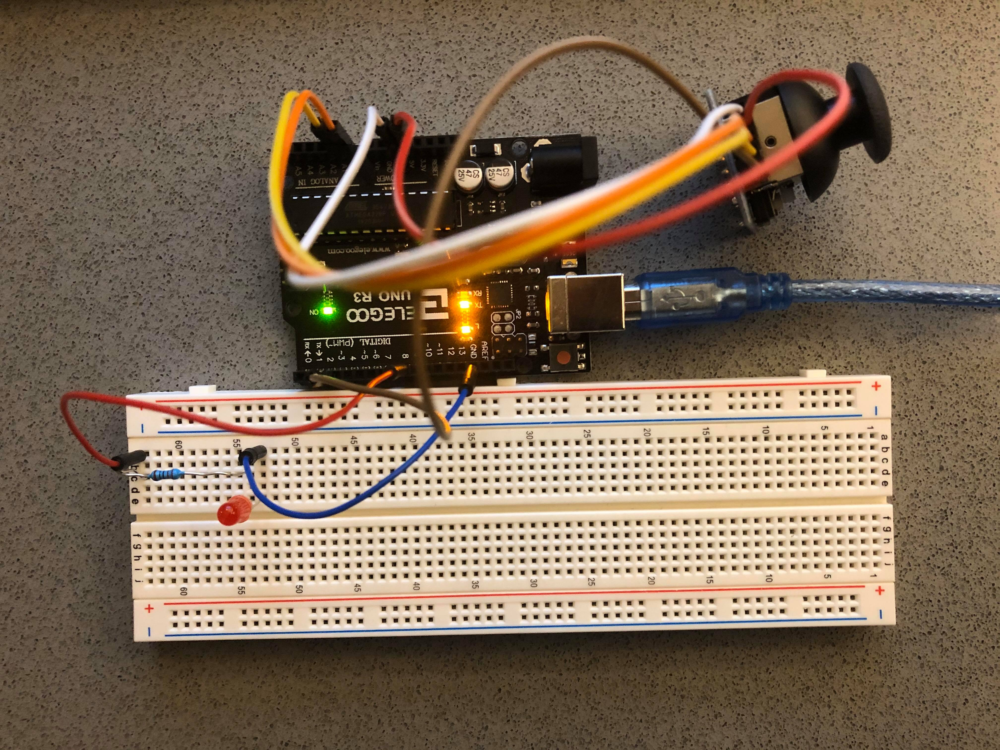
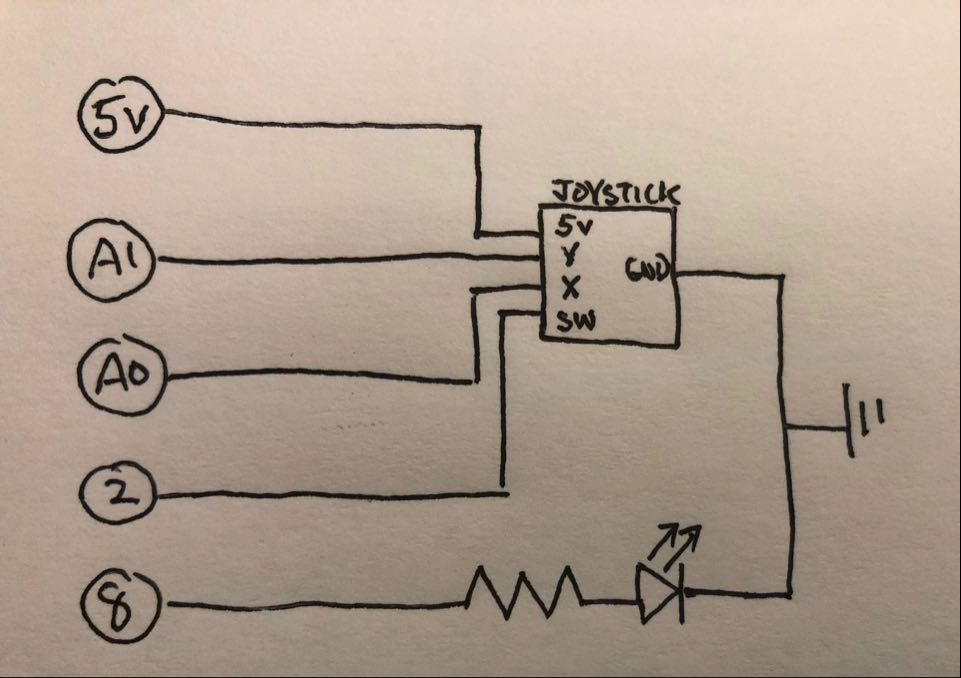

Jesse Du's Assignment 5!

A joystick module connected to the Arduino board with Dupont wires (ground, 5V, VRx to pin A0, VRy to pin A1, and switch to pin 2). A separate red LEG with 220 Ohm resistor connected to pin 8 and ground.

I chose a 220 Ohm resistor for the red LED as calculated from Ohm's Law (R=V/I=(5-1.8)/0.025=128 Ohms). The joystick does not require external resistor as it is essentially two potentiometres.

A square on the monitor can be moved around with the joystrick. The LED blinks whenever the joystick is moved; pressing any key on the keyboard will turn the LED off.
Below is the Arduino code snippet:
int ledPin = 8; // LED connected to digital pin 8
int VRx = 0; // joystick slider variable connecetd to analog pin 0
int VRy = 1; // joystick slider variable connecetd to analog pin 1
int valueX = 0; // variable to read sensor value from the analog pin 0
int valueY = 0; // variable to read sensor value from the analog pin 1
// setup code to run once
void setup() {
pinMode(ledPin, OUTPUT); // initialize LED pin as output
Serial.begin(9600); // initialize serial communications
Serial.setTimeout(10); // set the timeout for parseInt
}
// function to map sensor data to numbers suitable for canvas drawing
int treatValue(int data) {
return data = map(data, 0, 1023, 0, 400);
}
// main code to run repeatedly
void loop() {
// read sensor values of the variable resistors
valueX = analogRead(VRx);
valueY = analogRead(VRy);
if (Serial.available()) { // check if there is serial data
digitalWrite(ledPin, LOW); // turn off LED
} else { // if no serial data is received
if ((valueX >= 494 && valueX <= 504) && (valueY >= 504 && valueY <= 514)) { // turn LED on when moving joystick
digitalWrite(ledPin, LOW); // LED remains off when in joystick in resting position (estimated [494-504, 504-514])
} else {
digitalWrite(ledPin, HIGH); // LED on when joystick not in resting position
}
}
// send an array of the two values to serialport
Serial.print('[');
Serial.print(treatValue(valueX));
Serial.print(',');
Serial.print(treatValue(valueY));
Serial.println(']'); // write last bracket followed by ‘\r’ carriage return and ‘\n’ line feed characters
}
Below is the p5.js code snippet from sketch.js:
var serial; // variable to hold an instance of the serialport library
var portName = 'COM3' // name of serialport
var datastring; // data string coming in over serial
var dataarray = [0, 0]; // declare dataarray
var minWidth = 600; // set min width for canvas
var minHeight = 400; // set min hieght for canvas
var width, height; // actual width and height for the sketch
function setup() {
serial = new p5.SerialPort(); // make a new instance of the serialport library
serial.on('list', printList); // set a callback function for the serialport list event
serial.on('connected', serverConnected); // callback for connecting to the server
serial.on('open', portOpen); // callback for the port opening
serial.on('data', serialEvent); // callback for when new data arrives
serial.on('error', serialError); // callback for errors
serial.on('close', portClose); // callback for the port closing
serial.list(); // list the serial ports
serial.open(portName); // open a serial port
// set the canvas to match the window size
if (window.innerWidth > minWidth) {
width = window.innerWidth;
} else {
width = minWidth;
}
if (window.innerHeight > minHeight) {
height = window.innerHeight;
} else {
height = minHeight;
}
// set up actual canvas
createCanvas(width, height);
}
// following functions print the serial communication status to the console for debugging
function printList(portList) {
for (var i = 0; i < portList.length; i++) {
print(i + " " + portList[i]);
}
}
function serverConnected() {
print('connected to server.');
}
function portOpen() {
print('the serial port opened.')
}
function serialError(err) {
print('Something went wrong with the serial port. ' + err);
}
function portClose() {
print('The serial port closed.');
}
// read data from serial
function serialEvent() {
if (serial.available()) { // check if there is data over serial
datastring = serial.readLine(); // read data string line by line
var newarray;
try {
newarray = JSON.parse(datastring); // try parse the serial with JSON
} catch(err) {
console.log(err); // log JSON error to console
}
if (typeof(newarray) == 'object') {
dataarray = newarray; // store received data in an array
}
console.log("got back " + datastring); // log received array to console
}
}
// serial communication to Arduino
function keyPressed() {
console.log("writing key"); // log event to console
serial.write(key); // send pressed key over serial
}
// draw square canvas based on Arduino data
function draw() {
background(0x08, 0x16, 0x40); // set background colour
fill(255); // set fill colour
text("PRESS ANY KEY TO TURN OFF LED", 55, 30); // write text on canvas
rect(dataarray[0],dataarray[1],50,50); // draw 50x50 square whose position is controlled by Arduino data
}